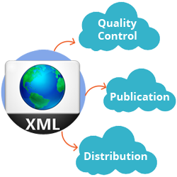
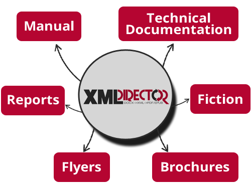
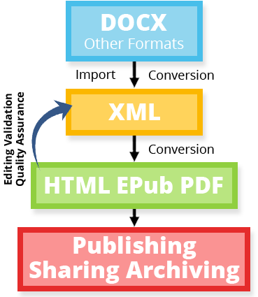
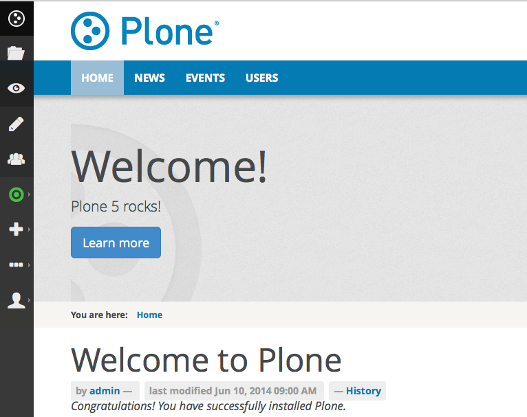

Enterprise XML Content Management
Unified XML Workflows
Single-Source Multi-Channel Publishing
DOCX→XML Conversion & Import
High-Quality PDF Generation
Open Architecture • Open-Source
<?xml version="1.0"?> <cms> <title>XML-Director</title> <ingredients> <item>Plone CMS</item> <item>eXist-db</item> <item>BaseX</item> </ingredients> <features> <item>Custom content-types</item> <item>Workflows</item> <item>Fine-grain roles and access management</item> <much-more-features/> </features> </cms>
Seamless import of DOCX content into our XML CMS and conversion to XML. We support conversion of Docbook DTD and DITA out-of-the-box. DOCX documents using stylesheets can be converted to XML/HTML using a custom DOCX conversion and back to DOCX.

XML-Director allows you to manage the complete XML workflow through a unified web interface, from upload and conversion to quality control, publication and distribution. Fine-grained access control allows you to define who can access and edit content.
XML-Director supports multiple PDF converters to generate high-quality PDF documents from your XML content. Custom styles for your corporate identity or content branding can be added and controlled easily through CSS (Cascading Style Sheets).
How awesome is it?

XML-Director provides a simple and unified user interface for those using XML publishing workflows. XML-Director can be used for technical documentation and for the authoring and production of guidelines, quality assurance documentation, SOP and more.
The goal of XML-Director is to unify the XML workflow under one umbrella. Our solution can be used to:
XML-Director provides a unified user interface that manages all aspects and all functionality through the web.

XML-Director supports the generation of high-quality documents. The PDF quality is comparable to the quality of documents generated with tools like Adobe Indesign or TeX/LaTeX.
XML-Director supports a variety of high-quality PDF converters like PDFreactor, PrinceXML, Antennahouse Formatter or Speedata Publisher.

XML-Director uses the enterprise CMS Plone. Plone is a classical web content management system that we extended to support the storage of content in eXist-db. Plone also provides the unified user interface for XML-Director.
The fine-grained access control of Plone combined with the flexible workflow system gives you full control over who is able to access and edit content.
Your data is safe in Plone. Plone counts among the most secure content management systems and has an outstanding security record. Plone is trusted by large institutions such as the FBI.
Related videos, Slides etc.
Customers using our publishing technology
We are working since almost 20 years in the field of electronic publishing, content management systems, large web publications, intranets and extranets and custom software development. Lead developer Andreas Jung worked over the last 20 years for several publishers in Germany and helped to build enterprise-level applications for customers.
XML-Director Version 2.0 is officially released. XML-Director 2.0 is ready for production and used successfully in two customer projects.
Past issues of the XML-Director newsletter can be found in the archive.
Development model, development resources
XML-Director is being developed as an open-source project. Our code is located on Github. You are invited to fork the code and contribute to the project through pull requests or by joining the core team.
The current XML-Director development release is available as a Docker image or on the project's demo site.
> docker run -p 12020:12020 zopyx/xmldirector-plone
Connect with your browser to http://localhost:12020/xml-director and login with username demo and password demo.
...awesome, we know.
Andreas Jung has twenty years' experience in publishing and content management projects. As the head of ZOPYX, he has worked in multi-lingual projects for the EU community and as developer and technical advisor in various projects for publishers in Germany.
The XML-Director project by Andreas Jung was created several years ago in order to provide publishers with the best possible tools for building efficient and productive publishing solutions based on customer needs and not on vendor constraints.
Andreas Jung/ZOPYX
Hundskapfklinge 33
D-72074 Tübingen, Germany
P: +49-7071-793376
You will love our work!
Don't hesitate to send us an e-mail, and we'll arrange a call so that we can get to know each other.